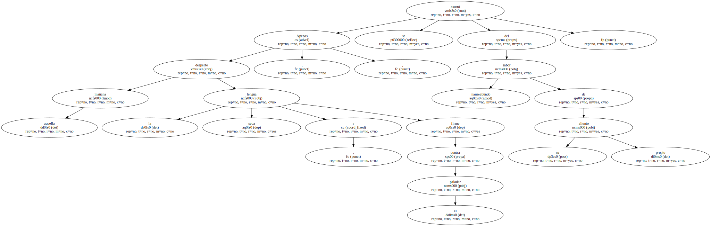
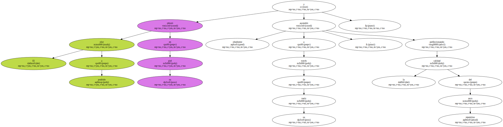
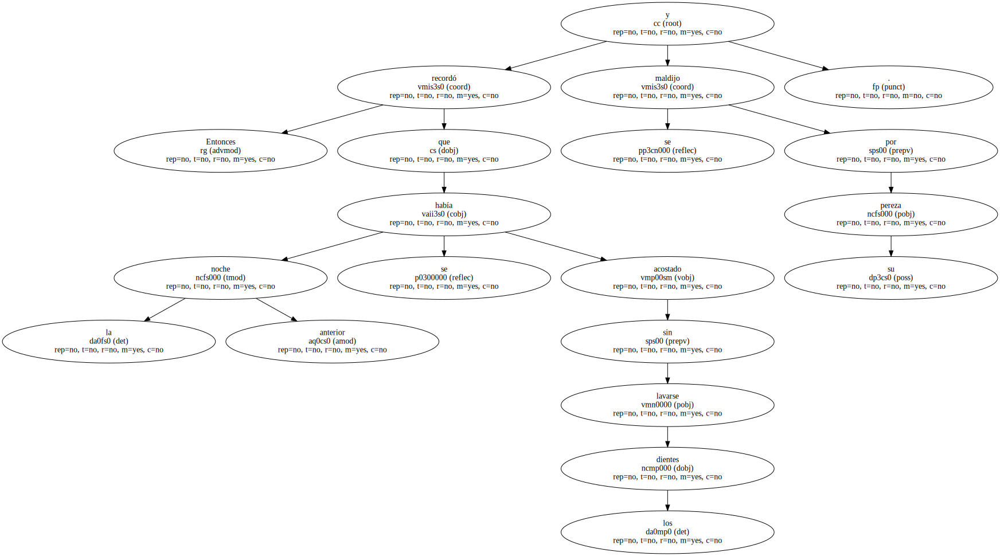
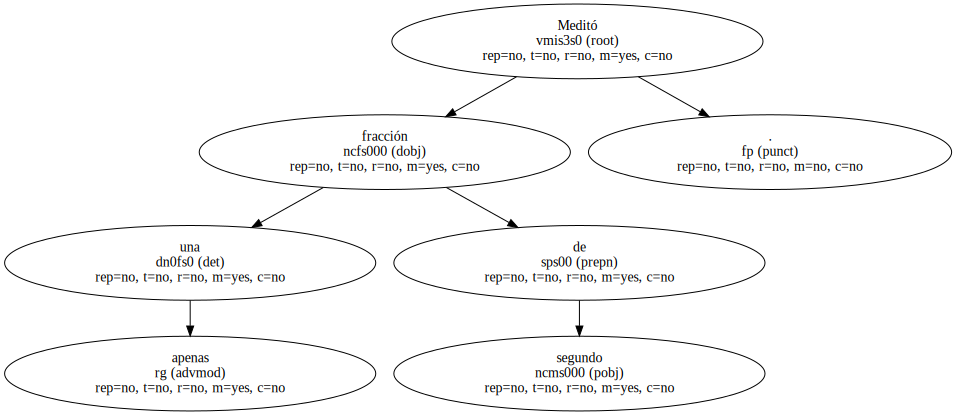
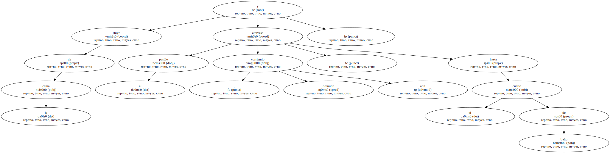
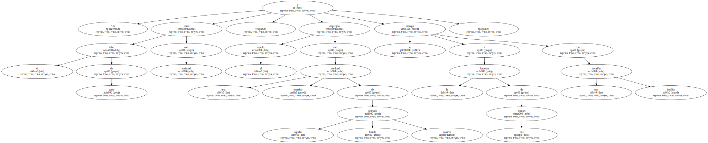
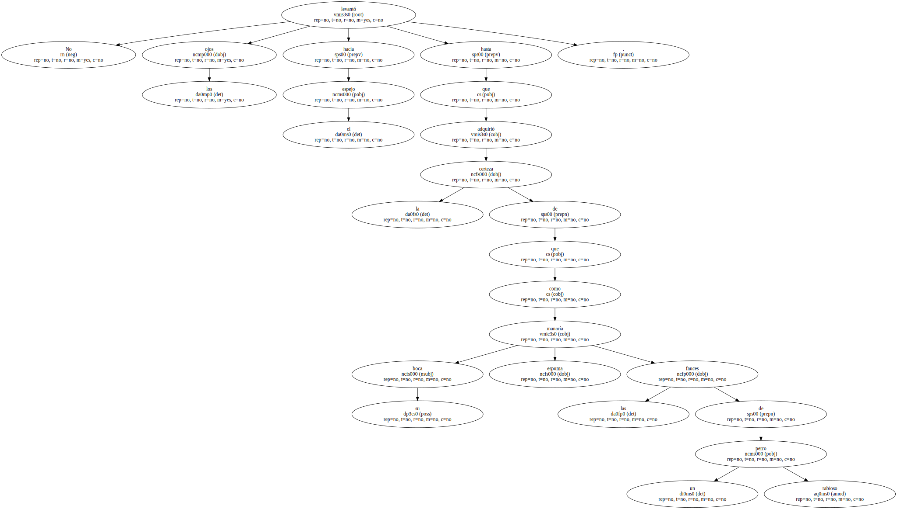
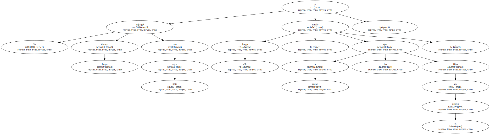
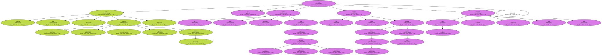

Apenas despertó aquella mañana , la lengua seca , y firme contra el paladar , se asustó del sabor nauseabundo de su propio aliento.
Acercó lentamente a su cara la palma de una mano y abrió la boca para dejar escapar una bocanada de aire caliente.

El olor a podrido rebotó en su piel y ascendió obediente a través de su nariz , perfeccionando la calidad del asco repentino.
Entonces recordó que la noche anterior se había acostado sin lavarse los dientes y se maldijo por su pereza.
Meditó apenas una fracción de segundo.
Huyó de la cama y atravesó el pasillo corriendo , desnudo aún , hasta el cuarto de baño.
Allí abrió el tubo de pasta con ansiedad , impregnó el cepillo con una cantidad excesiva de aquella blanda pomada rosácea y se entregó a la limpieza de sus dientes con una decisión insólita.
No levantó los ojos hacia el espejo hasta que adquirió la certeza de que su boca manaría espuma como las fauces de un perro rabioso.
Se enjuagó largo tiempo con agua tibia y sólo luego , de nuevo los ojos fijos en el espejo , sonrió.
Aquella sonrisa ritual , una mueca encausada y gratuita , ridícula , no era más que un torpe recurso personal para propiciar otros improbables presagios favorables , una burda trampa tendida hacia sí mismo cada mañana , una estupidez más.
